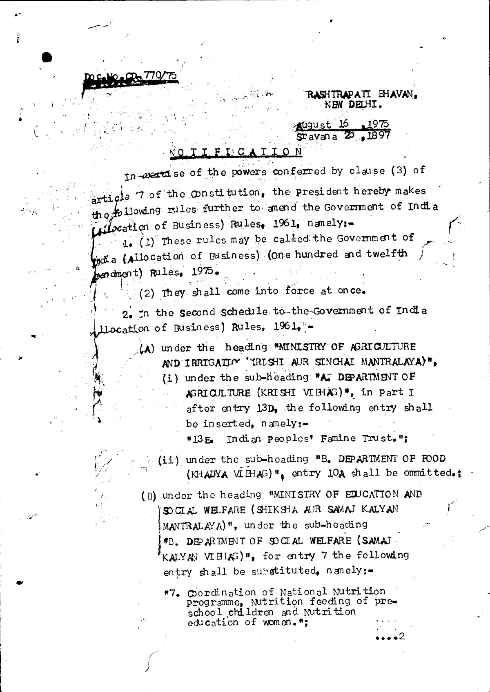
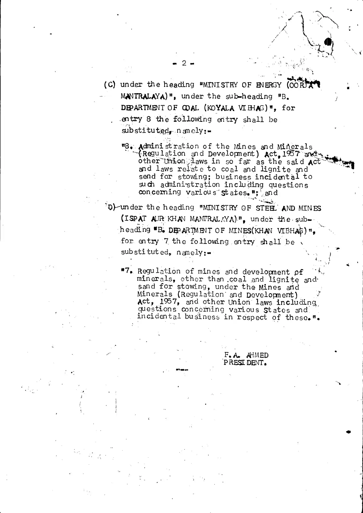
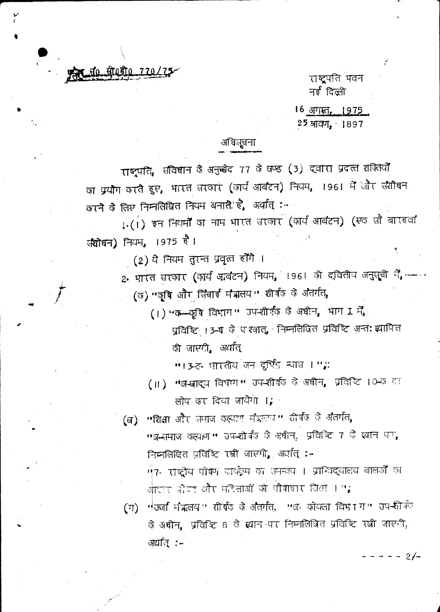
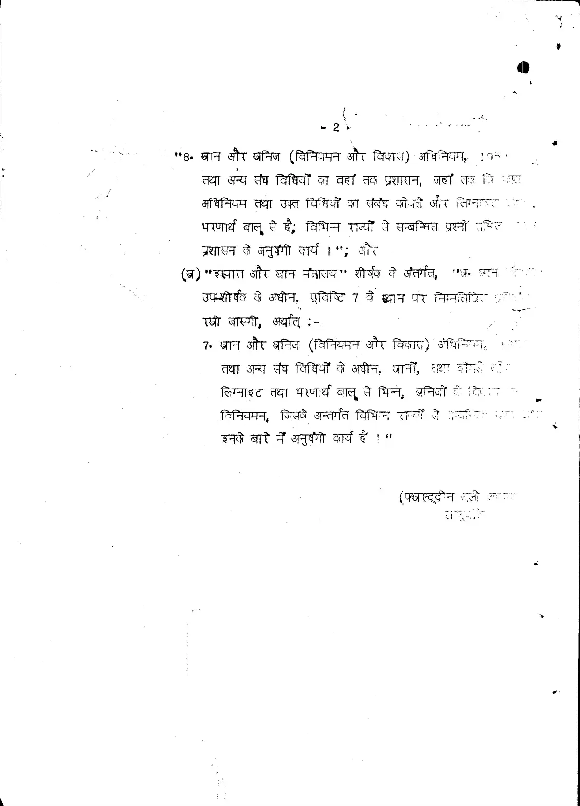

Amendment #112 (S.O. 438(E), 1975)
5 changes: 0 to the First Schedule, 5 to the Second Schedule. 5 applied
The order, page by page
Page 1 of 4

123after Schedule 2 › MINISTRY OF AGRICULTURE AND IRRIGATION › DEPARTMENT OF AGRICULTURE › Part I › entry 13D
- 13E. Indian peoples' Famine Trust.
applied at schedule 2 › ministry MINISTRY OF AGRICULTURE AND IRRIGATION › department A › part I › entry 13E in the Rules after #112
Schedule 2 › MINISTRY OF AGRICULTURE AND IRRIGATION › DEPARTMENT OF FOOD › entry 10A
applied at schedule 2 › ministry MINISTRY OF AGRICULTURE AND IRRIGATION › department B › group_heading II › entry 10A in the Rules after #112
Schedule 2 › MINISTRY OF EDUCATION AND SOCIAL WELFARE › DEPARTMENT OF SOCIAL WELFARE › entry 7
- #7. Coordination of National Nutrition Programme, Nutrition feeding of preschool children and Nutrition education of women.
applied at schedule 2 › ministry MINISTRY OF EDUCATION AND SOCIAL WELFARE › department B › part IV › entry 7 in the Rules after #112
Page 2 of 4

45Schedule 2 › MINISTRY OF ENERGY › DEPARTMENT OF COAL › entry 8
- 8. Administration of the Mines and Minerals (Regulation and Development) Act. 1957 and other Union laws in so far as the said Act and laws relate to coal and lignite and send for stowing; business incidental to such administration including questions concerning various states.
applied at schedule 2 › ministry MINISTRY OF ENERGY (0ORJA MANTRALAYA) › department B › entry 8 in the Rules after #112
Schedule 2 › MINISTRY OF STEEL AND MINES › DEPARTMENT OF MINES › entry 7
- #7. Regulation of mines and development of minerals, other than .coal and lignite andsand for stowing, under the Mines and Minerals (Regulation and Development) Act, 1957, and other Union laws including. questions concerning various States and incidental business in respect of these.
applied at schedule 2 › ministry MINISTRY OF STEEL AND MINES › department B › entry 7 in the Rules after #112
Page 3 of 4

Page 4 of 4

How this document was read
From the Government of India (Allocation of Business) Rules, 1961 and their amendments, as published by the Cabinet Secretariat (cabsec.gov.in), read by orgpedia. The readings of the older scanned gazettes have known gaps.